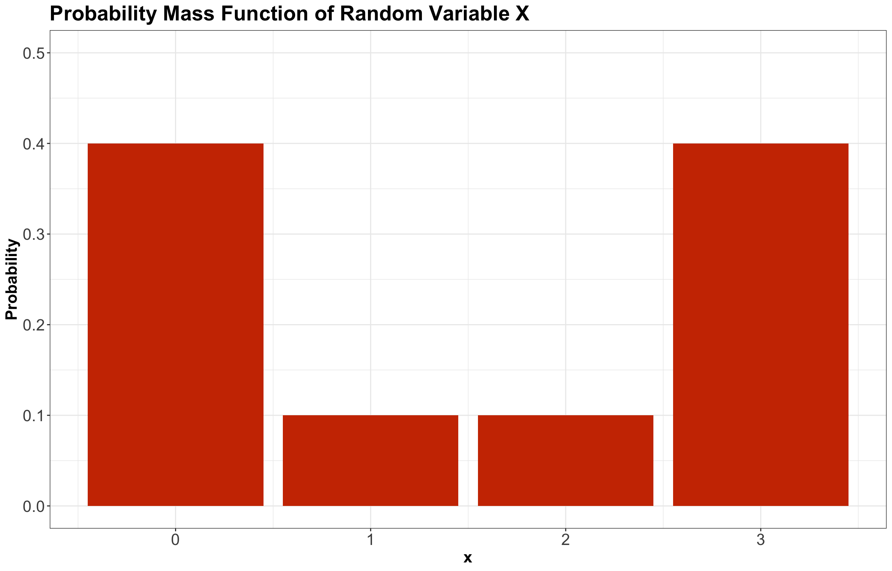
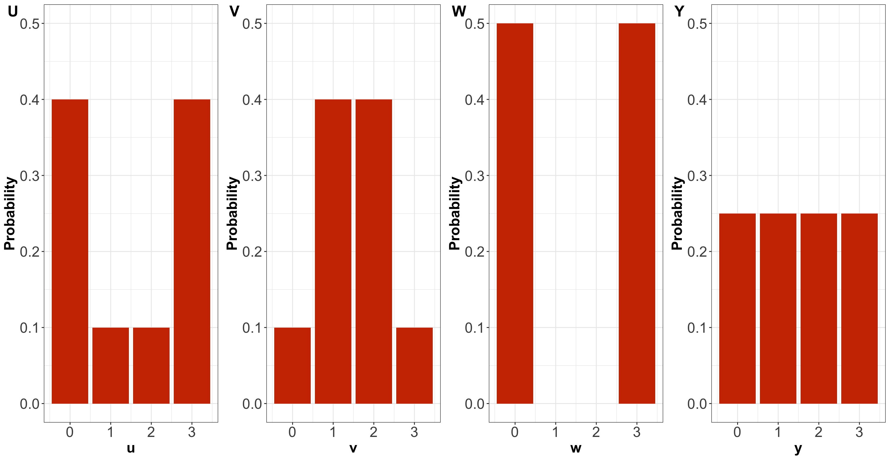
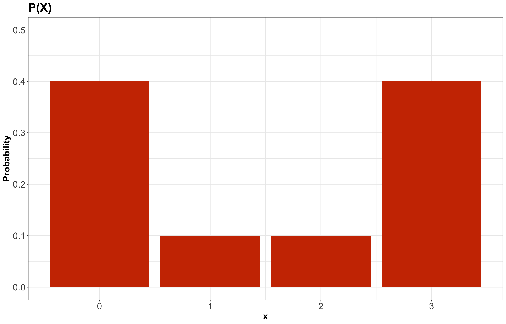
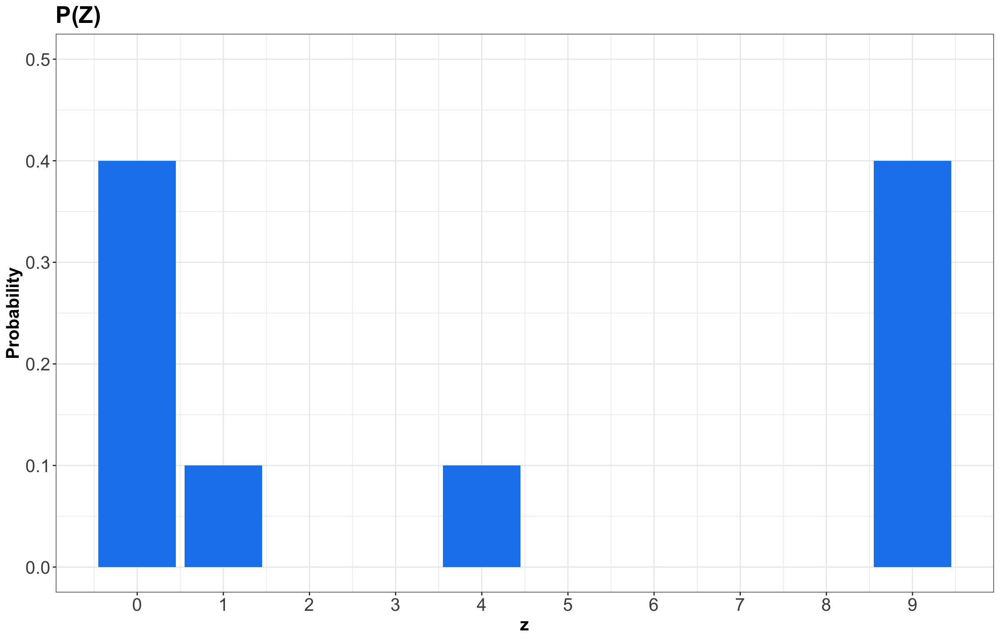
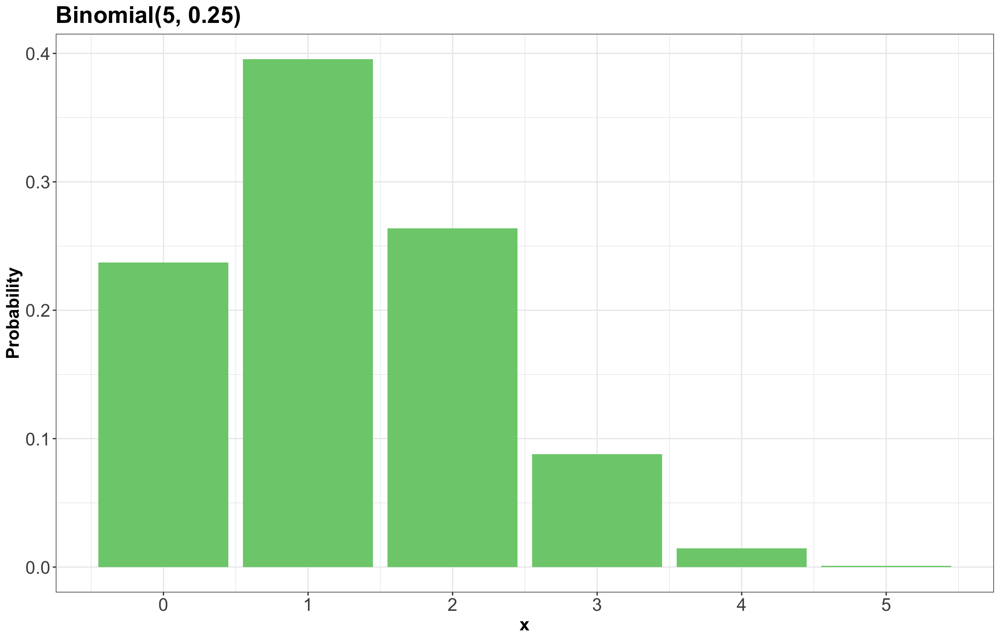

Lecture 2: Parametric Families
1 Slides
2 Learning Goals
By the end of this lecture, you should be able to:
- Calculate expectations of a linear combination of random variables.
- Match a physical process to a distribution family (Binomial, Geometric, Negative Binomial, Poisson, and Bernoulli).
- Calculate probabilities, mean, and variance of a distribution belonging to a distribution family.
- Find the probability mass function of a random variable transformation, e.g., \(X^2\).
- Distinguish between a family of distributions and a distribution.
- Identify whether a specification of parameters (such as mean and variance) is enough/too little/too much to specify a distribution from a family of distributions.
3 Properties of Distributions
We must start getting familiar with central tendency and uncertainty measures from the previous lecture. Hence, let us practice their computations with some in-class iClicker exercises.
3.1 A Single Probability Mass Function
Suppose \(X\) is a discrete random variable denoting the following:
\[X = \text{Number of crabs found at a nest in a Mexican beach.}\]

Its probability mass function (PMF) is given by Table 1.
| \(X\) | \(P(X = x)\) |
|---|---|
| 0 | 0.4 |
| 1 | 0.1 |
| 2 | 0.1 |
| 3 | 0.4 |
Then, we plot this PMF as a bar chart (see Figure 2).
Now, let us start with some in-class questions via iClicker.
Exercise 6
Using Table 1 for random variable \(X\), compute \(\mathbb{E}(X)\). Select the correct option:
A. 1
B. 1.5
C. 1.9
D. 6
Exercise 7
Using Table 1 for random variable \(X\), compute the variance \(\text{Var}(X)\). Select the correct option:
A. 2.6
B. 1.85
C. 4.1
D. -1.85
Exercise 8
Using Table 1 for random variable \(X\), obtain the mode \(\text{Mode}(X)\). Select the correct option:
A. 0
B. 3
C. Both 0 and 3
D. Neither
Exercise 9
Using Table 1 for random variable \(X\), obtain the entropy \(H(X)\). Select the correct option:
A. -1.19
B. 0.52
C. -0.52
D. 1.19
3.2 Comparing Multiple Probability Mass Functions
Now, suppose there are four different random variables related to four Mexican beaches:
\[ \begin{gather*} U = \text{Number of crabs found at a nest in a beach at Acapulco} \\ V = \text{Number of crabs found at a nest in a beach at Cabo San Lucas} \\ W = \text{Number of crabs found at a nest in a beach at Cancún} \\ Y = \text{Number of crabs found at a nest in a beach at Puerto Vallarta.} \end{gather*} \]
Their corresponding PMFs are shown in Figure 4.

Let us continue with some other in-class questions via iClicker.
Exercise 10
Answer TRUE or FALSE:
By only looking at the PMFs, \(U\) has higher entropy than \(V\).
A. TRUE
B. FALSE
Exercise 11
Answer TRUE or FALSE:
By only looking at the PMFs, \(U\) has higher variance than \(V\).
A. TRUE
B. FALSE
Exercise 12
Answer TRUE or FALSE:
By only looking at the PMFs, \(W\) has the highest variance amongst the four distributions.
A. TRUE
B. FALSE
Exercise 13
Answer TRUE or FALSE:
By only looking at the PMFs, \(Y\) has the highest entropy amongst the four distributions.
A. TRUE
B. FALSE
4 Random Variable Transformations
A fundamental characteristic of a random variable is that it can be turned into other random variables via mathematical transformations. This characteristic is crucial in data modelling since we can easily adjust random variables to find proper estimation and inference methods.
4.1 Revisiting Variance
In the previous lecture, we checked the formula for the variance of a random variable \(X\) in two forms:
- \(\text{Var}(X) = \mathbb{E}\{[X - \mathbb{E}(X)]^2\}\), or alternatively
- \(\text{Var}(X) = \mathbb{E}(X^2) - [\mathbb{E}(X)]^2\).
Given that \(\mathbb{E}(X)\) is the mean of the random variable, the form in (1) is more intuitive to grasp the variance concept: it is the squared deviation of the random variable \(X\) to its mean. On the other hand, (2) is handier for mathematical manipulations involving expected value properties.
Now, using both methods to calculate the variance as depicted earlier with Table 1, we can calculate the variance of \(X\) as follows:
4.1.1 Method 1
\[ \begin{align*} \text{Var}(X) &= \mathbb{E} \left\{ \left[ X - \mathbb{E}(X) \right]^2 \right\} \\ &= \mathbb{E} \left[ \left( X - 1.5 \right)^2 \right] \qquad \text{since} \quad \mathbb{E}(X) = 1.5 \\ & = (-1.5)^2(0.4) + (-0.5)^2(0.1) + (0.5)^2(0.1) + (1.5)^2(0.4) \\ &= 1.85. \end{align*} \]
4.1.2 Method 2
\[ \begin{align*} \text{Var}(X) &= \mathbb{E} \left( X^2 \right) - \left [\mathbb{E}(X) \right]^2 \\ &= \mathbb{E}(X^2) - (1.5)^2 \qquad \text{since} \quad \mathbb{E}(X) = 1.5 \\ &= (0)^2(0.4) + (1)^2(0.1) + (2)^2(0.1) + (3)^2(0.4) - (1.5)^2 \\ &= 1.85. \end{align*} \]
4.2 Distribution Mapping
For the sake of the topic of random variable transformations, let us focus the attention on the expected value \(\mathbb{E} \left( X^2 \right)\) for the random variable
\[X = \text{Number of crabs found at a nest in a Mexican beach}\]
whose PMF is defined in Table 1.
More specifically, what does \(X^2\) mean? It comes down to what we define in Statistics as a random variable transformation. First, it is important to clarify that \(X^2\) will be a new transformed random variable that takes on the squares of the values of \(X\). However, their distributions are different .
In this class of matters, we usually rename our transformed variable. For example:
\[Z = X^2.\]
Moreover, let us revisit the PMF from earlier for \(X\), calling it \(P(X)\):

To obtain the PMF of \(Z = X^2\), we basically need to map the possible values of \(Z\) while still keeping the same probabilities! This is a crucial point in random variable transformation. Therefore, the previous PMF for \(X\) becomes for \(Z\) as:

Important
Even though we keep the same probabilities in \(P(Z)\), note that the values on the horizontal axis correspond to the squared outcomes of \(X\).
Just as in Table 1, the PMF of \(Z\) can be put as a table:
| \(Z\) | \(P(Z = z)\) |
|---|---|
| 0 | 0.4 |
| 1 | 0.1 |
| 4 | 0.1 |
| 9 | 0.4 |
Important
We already clarified that random variables are denoted in uppercase. Nonetheless, once we observe a specific outcome of a given random variable, we use lowercase.
4.3 Expected Value Properties
Expected values have certain useful properties. For instance, we can calculate them under linear random variable transformations.
Definition of Linearity of Expectations
If \(a\) and \(b\) are constants, with \(X\) and \(Y\) as random variables, then we can obtain the expected value of the following expressions as:
\[\mathbb{E}(a X) = a \mathbb{E}(X)\] \[\mathbb{E}(X + Y) = \mathbb{E}(X) + \mathbb{E}(Y)\] \[\mathbb{E}(aX + bY) = a\mathbb{E}(X) + b\mathbb{E}(Y).\]
Important
Let us be cautious with the mathematical manipulations of the expected value operator \(\mathbb{E}(\cdot)\). It does not follow the usual algebraic rules. For instance, if no further assumptions are made for random variables \(X\) and \(Y\), then
\[\mathbb{E}(XY) \neq \mathbb{E}(X)\mathbb{E}(Y).\]
Moreover, note the following:
\[\mathbb{E}(X^2) \neq [\mathbb{E}(X)]^2.\]
4.4 Variance Properties
The variance also has important properties in terms of linear random variable transformations.
Definition of Linearity of Variance for Independent Random Variables
If \(a\) and \(b\) are constants, with \(X\) and \(Y\) as independent random variables, then we can obtain the variance of the following expressions as:
\[\text{Var}(a X) = a^2 \text{Var}(X)\] \[\text{Var}(X + Y) = \text{Var}(X) + \text{Var}(Y)\] \[\text{Var}(aX + bY) = a^2 \text{Var}(X) + b^2 \text{Var}(Y).\]
5 Distribution of Families
So far, we have discussed the properties of probability distributions in general. Again, this is important because a huge component of Data Science is to model data as random variables with uncertain outcomes. For instance:
- The number of ships that arrive at the port of Vancouver on a given day (i.e., a discrete and count random variable).
- A rock type (i.e., a discrete and categorical random variable).
Certain variables in common random processes give rise to probability distributions having a particular form, and these distributions are very useful in data modelling (e.g., regression analysis). The world of statistical distributions is vast. In the case of univariate distributions (i.e., a single random variable), this resource will be especially helpful throughout the program since it contains key information such as their corresponding PMFs or probability density functions (PDFs). Moreover, the chart illustrates how these distributions are related via random variable transformations.
As a first step, we will start with common discrete random variables. Particularly, let us use the Bernoulli and Binomial families of distributions as an example.
5.1 Bernoulli
5.1.1 Process
Suppose you play a game and win with probability \(0 \leq p \leq 1\). Let \(X\) be the outcome of this game. It is a binary random variable as follows
\[ X = \begin{cases} 1 \; \; \; \; \text{if you win the game (success)},\\ 0 \; \; \; \; \mbox{otherwise}. \end{cases} \]
The value \(1\) has a probability of \(p\), whereas the value \(0\) has a probability of \(1 - p\).
A Bernoulli distribution is depicted as:
\[X \sim \text{Bernoulli}(p).\]
Important
The symbol “\(\sim\)” means “is distributed as.”
5.1.2 PMF
A Bernoulli distribution is characterized by the PMF
\[P(X = x \mid p) = p^x (1 - p)^{1 - x} \quad \text{for} \quad x = 0, 1.\]
5.1.3 Mean
Using the formula for discrete expected value, the mean of a Bernoulli random variable is defined as:
\[ \begin{align*} \mathbb{E}(X) &= \sum_{x = 0}^1 x \cdot P(X = x \mid p) \\ &= \sum_{x = 0}^1 x \cdot p^x (1 - p)^{1 - x} \\ &= \underbrace{0 \times \left[ p^0 \times (1 - p)^{1 - 0} \right]}_{0} + \underbrace{1 \times \left[ p \times (1 - p)^{1 - 1} \right]}_{p} \\ &=p. \end{align*} \]
5.1.4 Variance
The variance of a Bernoulli random variable is defined as:
\[ \begin{align*} \text{Var}(X) &= \mathbb{E}(X^2) - [\mathbb{E}(X)]^2 \\ &= \mathbb{E}(X^2) - p^2 \qquad \text{since} \quad \mathbb{E}(X) = p \\ &= \sum_{x = 0}^1 x^2 \cdot P(X = x \mid p) - p^2 \\ &= \underbrace{0^2 \times \left[ p^0 \times (1 - p)^{1 - 0} \right]}_{0} + \underbrace{1^2 \times \left[ p \times (1 - p)^{1 - 1} \right]}_{p} - p^2 \\ &= p - p^2 \\ &= p(1 - p). \end{align*} \]
5.2 Binomial Distribution
5.2.1 Process
Suppose you play a game and win with probability \(0 \leq p \leq 1\). Let \(X\) be the number of games you win within \(n\) independent games in total. \(X\) is said to have a Binomial distribution, written as
\[X \sim \text{Binomial} \left( n, p \right).\]
5.2.2 PMF
A Binomial distribution is characterized by the PMF
\[P \left( X = x \mid n, p \right) = {n \choose x} p^x (1 - p)^{n - x} \quad \text{for} \quad x = 0, 1, \dots, n.\]
Note the Bernoulli distribution is a special case of the Binomial family with \(n = 1\).
Important
Term \({n \choose x}\) is read as “n choose x.” You can think of it as the number of ways to make a team of \(x\) people from a total of \(n\) people. You can calculate this in R with choose(n, x), and its formula is
\[{n \choose x} = \frac{n!}{x!(n - x)!}.\]
5.2.3 Example
Let us derive the probability of winning exactly two games out of five. That is, \(P(X = 2)\) when \(n = 5\) and \(p = 0.25\):
\[ \begin{align*} P(X = 2 \mid n = 5, p = 0.25) &= {5 \choose 2} (0.25)^2 (1 - 0.25)^{5 - 2} \\ &= \frac{5!}{2!(5 - 2)!} (0.25)^2 (1 - 0.25)^{5 - 2} \\ &= 0.26. \end{align*} \]
5.2.4 Mean
The mean of a Binomial random variable is defined as:
\[\mathbb{E}(X) = n p.\]
5.2.5 Variance
The variance of a Binomial random variable is defined as:
\[\text{Var}(X) = n p (1 - p).\]
Note
As we did previously with the expected value and variance of the Bernoulli distribution, there are ways to prove the expressions for the expected value and variance of any known distribution (either continuous or discrete). Nonetheless, this is out of the scope of MDS.
Instead, we will work directly with the corresponding expressions for the expected values and variances of all these specific distributions.
5.2.6 Code
The Binomial PMF can be calculated in R with dbinom() and in Python with scipy.stats.binom().
5.3 Families Versus Distributions
Here is an example for a \(\text{Binomial}(n = 5, p = 0.25)\) distribution:

Specifying a value for both \(p\) and \(n\) results in a unique Binomial distribution. For example, the \(\text{Binomial}(n = 5, p = 0.25)\) distribution is plotted in Figure 7. It is helpful to remember that there are, in fact, many Binomial distributions (actually infinite!), one for each choice of \(p\) and \(n\). We refer to the entire set of probability distributions as the Binomial family of distributions.
Note
It does not actually make sense to talk about “one” Binomial distribution! This is important to remember as we add concepts throughout MDS, such as the maximum likelihood estimator you will see later on in this course.
5.4 Parameters
In the case of the Binomial distribution, knowing \(p\) and \(n\) is enough to know the entire distribution within the Binomial family. That is, no further information is needed – we know all \(n + 1\) probabilities based on only two numbers! Since \(p\) and \(n\) fully specify a Binomial distribution, we call them parameters of the Binomial family, and we call the Binomial family a parametric family of distributions.
Important
In general, a parameter is a variable whose specification narrows down the space of possible distributions (or, to be even more general, the space of possible models).
5.5 Parameterization
A Binomial distribution can be specified by knowing \(n\) and \(p\), but there are other ways we can specify the distribution. For instance, specifying the mean and variance is enough to identify a Binomial distribution.
Exactly which variables we decide to use to identify a distribution within a family is called the family’s parameterization. So, the Binomial distribution is usually parameterized according to \(n\) and \(p\), but could also be parameterized in terms of the mean and variance. A distribution family’s “usual” parameterization is sometimes called the canonical parameterization.
In general, there are many ways in which a distribution family can be parameterized. The parameterization you use in practice will depend on the information you can more easily obtain.
5.6 Distribution Families in Practice
Why is it useful to know about distribution families?
In general, when we are modelling something, like a river flow, next month’s net gains, or the number of ships arriving at port tomorrow, we have the choice to make a distributional assumption or not. That is:
- Do we want to declare the random variable of interest as belonging to a specific distribution family?
- Or, do we want to allow the random variable to have a fully general distribution?
Of course, both are good options depending on the scenario, and later in the program, we will explore the tradeoff with both options in more detail.
6 Another Common Discrete Distribution Families
6.1 Geometric Distribution
6.1.1 Process
Suppose you play a game, and win with probability \(p\). Let \(X\) be the number of independent failures at playing the game before experiencing the first independent win. Then \(X\) is said to have a Geometric distribution, written as
\[X \sim \text{Geometric} (p).\]
6.1.2 PMF
A Geometric distribution is characterized by the PMF
\[P(X = x \mid p) = p (1 - p)^x \quad \text{for} \quad x = 0, 1, \dots\]
Important
Note the following:
- Sometimes this family is defined so that \(X\) includes the winning attempt. The properties of the distribution differ, so be sure to be deliberate about which one you use.
- Since there is only one parameter, this means that if you know the mean, you also know the variance!
- The Geometric distribution has infinite support, or in other words infinitely many possible outcomes. We can still place a non-zero probability on each outcome and have the probabilities sum to 1 thanks to convergent series.
6.1.3 Mean
The mean of a Geometric random variable is defined as:
\[\mathbb{E}(X) = \frac{1 - p}{p}.\]
6.1.4 Variance
The variance of a Geometric random variable is defined as:
\[\text{Var}(X) = \frac{1 - p}{p^2}.\]
6.1.5 Code
The Geometric PMF can be calculated in R with dgeom() and in Python with scipy.stats.geom().
6.2 Negative Binomial Distribution (a.k.a. Pascal)
6.2.1 Process
Suppose you play a game, and win with probability \(p\). Let \(X\) be the number of independent losses at playing the game before experiencing \(k\) independent wins. Then \(X\) is said to have a Negative Binomial distribution, written as
\[X \sim \text{Negative Binomial} (k, p).\]
6.2.2 PMF
A Negative Binomial distribution is characterized by the PMF
\[P(X = x \mid k, p) = {k - 1 + x \choose x} p^k (1 - p)^x \quad \text{for} \quad x = 0, 1, \dots\]
Important
Note the following:
- It has two parameters: \(k\) and \(p\).
- The Geometric family results with \(k = 1\).
6.2.3 Mean
The mean of a Negative Binomial random variable is defined as:
\[\mathbb{E}(X) = \frac{k(1 - p)}{p}.\]
6.2.4 Variance
The variance of a Negative Binomial random variable is defined as:
\[\text{Var}(X) = \frac{k(1 - p)}{p^2}.\]
6.2.5 Code
The Negative Binomial PMF can be calculated in R with dnbinom() and in Python with scipy.stats.nbinom.
6.3 Poisson
6.3.1 Process
Suppose customers independently arrive at a store at some average rate \(\lambda\). Then, the total number \(X\) of customers arriving after a pre-specified length of time follows a Poisson distribution:
\[X \sim \text{Poisson} (\lambda).\]
Important
Note this distribution is parameterized by a single parameter: the mean \(\lambda\). We can find other examples that are indicative of a Poisson process:
- The number of ships arriving at Vancouver port on a given day.
- The number of emails you receive on a given day.
6.3.2 PMF
A Poisson distribution is characterized by the PMF
\[P(X = x \mid \lambda) = \frac{\lambda^x \exp(-\lambda)}{x!} \quad \text{for} \quad x = 0, 1, \dots\]
6.3.3 Mean
The mean of a Poisson random variable is defined as:
\[\mathbb{E}(X) = \lambda.\]
6.3.4 Variance
The variance of a Poisson random variable is defined as:
\[\text{Var}(X) = \lambda.\]
Important
A notable property of this family is that the mean is equal to the variance.
6.3.5 Code
The Poisson PMF can be calculated in R with dpois() and in Python with scipy.stats.poisson().